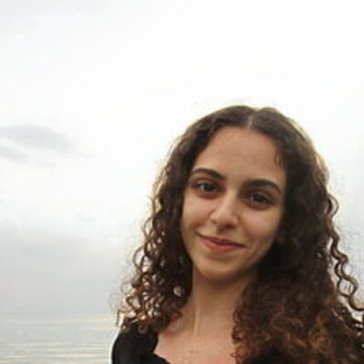
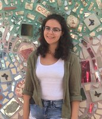
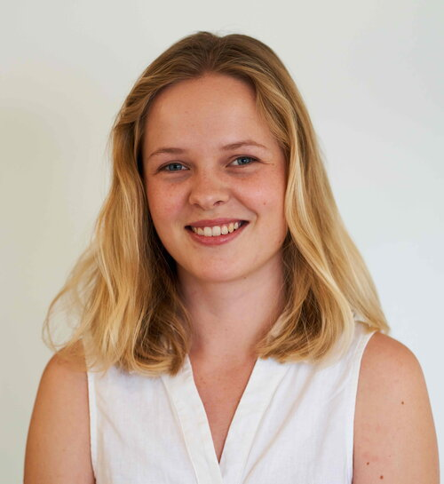
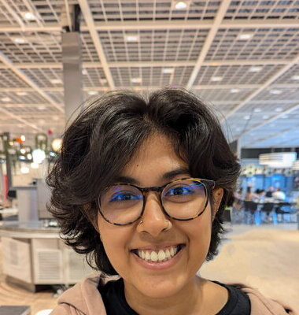
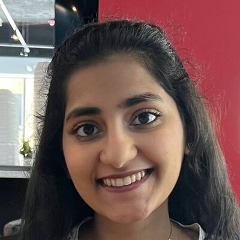

Rubin / LSST
Legacy Survey of Space and Time
~10 million alerts per night · 18,000 deg² · 10 years
The observatory all four research programs are built for
Data Preview 1 now available · DESC is the dark energy science collaboration
YSE
Young Supernova Experiment
DECam · Pan-STARRS
Precursor survey & synergistic observations
real-world training data for DESC & SkAI
SCiMMA
Multi-Messenger Infrastructure
HOPSKOTCH Kafka alert broker
HERMES web interface
BLAST host galaxy info
HEROIC ToO coordination
DASH SN spectral typing
survey-agnostic · hosts DESC & SkAI tools
also bridges → LIGO · IceCube
DESC
LSST Dark Energy Science Collaboration
SN Ia cosmology · strong lensing · photometric z
SASSAFRAS · RESSPECT · ORACLE
SASSAFRAS & RESSPECT shared with SkAI · ORACLE evolved into SELDON
SkAI
NSF-Simons AI Institute for Astronomy
Foundation AI models · real-time Rubin classification
SELDON foundation model for transients
Narayan+18 → RAPID → ORACLE → SELDON
H₀ / Hubble Constant
how fast is the universe expanding?
Dark Energy
does its strength evolve with time?
Rare Transients
TDE · kilonovae · extreme events
Host Galaxy Evolution
transients & their cosmic environments
Jason Hinkle
Hubble Fellow

Henna Abunemeh
Grad Student

Amanda Wasserman
Grad Student
Tanner Murphey
Grad Student

Athena Engholm
Grad Student
Haille Perkins
Grad Student

Padmavathi
Venkatraman
Grad Student

Aadya Agrawal
Grad Student